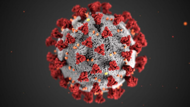

In this topic, we will explain the impact of computer engineering on COVID-19

The pandemic may have improved scientific communication or established new forms of it. For instance, a lot of data is being released on preprint servers and is getting dissected on social Internet platforms and sometimes in the media before entering formal peer review. Scientists are reviewing, editing, analysing and publishing manuscripts and data at record speeds and in large numbers. This intense communication may have allowed an unusual level of collaboration and efficiency among scientists.francis collins notes that while he hasn't seen research move faster, the pace of research "can still feel slow" during a pandemic. The typical model for research has been considered too slow for the "urgency of the coronavirus threat". A number of factors shape how much and which scientific knowledge can be established timely.